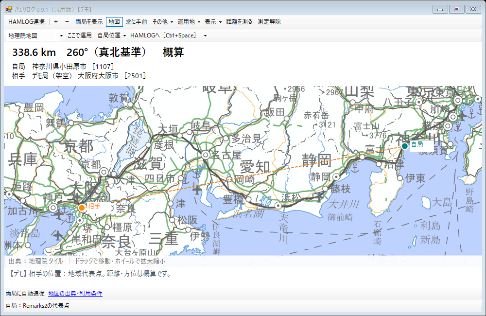

相手局までの距離と方角
相手の「コード」や「GL」から、直線距離と方位を表示。小さなウインドウをHAMLOGに重ねて使えます。
アマチュア無線の、いつもの交信に。
HAMLOGに入力した相手局の場所を地図へ。
距離と方角が見えると、交信がもう少し楽しくなる。
Windows 11向け · 無料試用版 0.9.1
無料試用版をダウンロードGoogleドライブから配付 · 利用者登録不要
先に使い方を読む
いつものHAMLOGと一緒に。
ログ・地域マスターへの書き込みなし
共有サーバーの設定なし
いつもの操作の、その横で
入力はHAMLOGへ。きょりログは、その内容を読み取って地図に表示します。
相手の「コード」や「GL」から、直線距離と方位を表示。小さなウインドウをHAMLOGに重ねて使えます。
登録した常置場所、地図で指定した地点、Windows位置情報などから自局の場所を選べます。
地図や航空写真を動かしながら、任意の地点までの距離を確認。POTA/SOTAの登録地点や推定標高も表示できます。
HAMLOGの「データの表示・修正」にも連動します。過去ログのRemarks2が空欄なら、登録済みの常置場所で補います。
ウインドウの行き来は
Ctrl＋スペース
同じ操作でHAMLOGと往復できます。
コードの位置は地域の代表点、GLの位置は区画の中心です。相手局の実際の居場所や、当時のGPS位置を特定するものではありません。距離・方位・標高は目安としてお楽しみください。
はじめの一歩
配付先の KyoriLog-v0.9.1.zip をダウンロード。右クリックして「すべて展開」を選びます。
HAMLOGの入力ウインドウを開き、展開先の KyoriLog.exe をダブルクリックします。
「常置場所」または「移動運用」を選びます。上部の「地図」をONにすると背景地図を取得します。
まずは「その他 → デモで試す」で、画面だけ試すこともできます。
使う前に知っておきたいこと
今回の試用版は無料です。きょりログの利用登録、共有サーバーの設定、クレジットカードの登録は不要です。通常のインターネット通信料はご利用の回線によります。
入力画面や過去ログ画面の内容と、地域マスターを読み取ります。HAMLOGのログファイルや地域マスターには書き込みません。HAMLOG本体・地域マスターは配付ZIPに含まれません。
地域マスターから距離・方位を計算できます。背景地図や航空写真、推定標高の新規取得には通信が必要で、オフラインでの背景地図の表示は保証していません。
「その他 → 地域マスターを選ぶ」から、使用中のHAMLOGの「HAMLOG.mst」を選んでください。常置場所の登録やRemarks2の記入例は、使い方に載せています。
署名のない個人開発の試用ソフトのため、警告が表示されることがあります。不明な警告が出た場合は無理に進めず、ご覧になった紹介投稿への返信で表示内容をお知らせください。
今回の試用版には、相互の位置共有やQRコードでスマホの現在地を取り込む機能は含めていません。今後の構想として検討していますが、公開時期や将来の料金は未定です。
まずは、いつもの交信で。
「起動できた」「ここが便利」「ここが分かりにくい」。
紹介した掲示板への返信で、一言でもお聞かせいただけるとうれしいです。
個人の試作のため、すべてのご要望への対応や即日の返信はお約束できません。